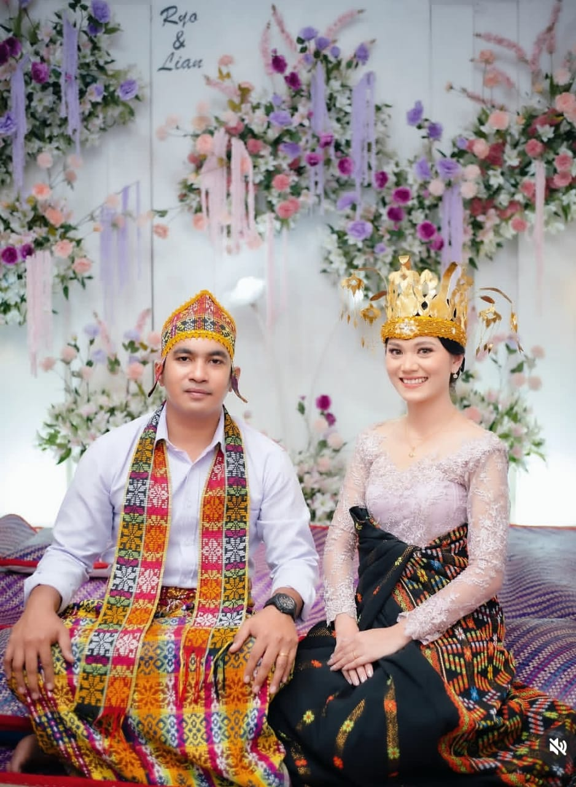

"Dan di antara tanda-tanda kekuasaan-Nya ialah Dia menciptakan untukmu pasangan hidup dari jenismu sendiri, supaya kamu cenderung dan merasa tenteram kepadanya, dan dijadikan-Nya di antaramu rasa kasih dan sayang."
🌿
Mempelai
🌿
Ryo.
Putra pertama dari
Bpk.Ryo &
Ibu.Ryo
&
Lyan
Putri pertama dari
Bpk.Lyan &
Ibu.lyan
🌿
Foto Bersama
🌿Menuju Hari Bahagia
00Hari
:
00Jam
:
00Menit
:
00Detik
🌿
Informasi Acara
🌿Akad Nikah
- Jumat, 15 Oktober 2026
- 08.00 – 10.00 WIB
-
Gereja Kumba Ruteng
Jl. Mawar No.10, Malang
🌿
Galeri
🌿
🌿
Konfirmasi Kehadiran
🌿Terima Kasih
Ryo
&
Lyan
Merupakan suatu kehormatan dan kebahagiaan bagi kami apabila Bapak/Ibu/Saudara/i berkenan hadir memberikan do'a restu kepada kami.
#RyoLyan2026